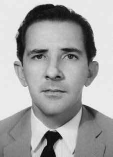

José
Dalmo
Guimarães
Lins
CIRCUNSTÂNCIAS DA MORTE
José Dalmo Guimarães Lins morreu no dia 11 de fevereiro de 1971, tendo se suicidado após ter sido preso por agentes da repressão e detido durante seis meses. Segundo um documento do Departamento de Ordem Política e Social (DOPS), consta que José Dalmo deu entrada no órgão em 18 de maio de 1970, e que no mesmo dia foi levado ao “xadrez especial”, onde ficou disponível para ser interrogado em um inquérito. No dia seguinte, 19 de maio, foi encaminhado, juntamente com sua esposa, ao quartel da Polícia do Exército na rua Barão de Mesquita, onde funcionava o Pelotão de Investigações Criminais (PIC) e atuavam agentes do CODI. Enquanto José ficou preso por seis meses, Maria Luiza permaneceu no Presídio Talavera Bruce por pouco mais de um ano. No período em que estiveram no DOI-CODI/RJ, ambos foram torturados. Segundo Maria Luiza, José Dalmo ficou muito deprimido após o período de encarceramento e não conseguiu superar os traumas causados pela prisão. Logo depois de ser posto em liberdade, José Dalmo desenvolveu uma espécie de delírio persecutório, que o levava a viver buscando formas para fugir dos seus algozes que imaginava persegui-lo. Ademais, buscava encontrar maneiras de libertar a esposa, pois se considerava responsável pelo fato dela estar presa. No dia 11 de fevereiro de 1971, ele se jogou da janela do apartamento em que morava, no bairro do Leblon, e morreu logo em seguida. Os restos mortais de José Dalmo Guimarães foram enterrados no cemitério São Francisco de Paulo, no Rio de Janeiro.
José Dalmo Guimarães Lins died on February 11, 1971, having committed suicide after being arrested by repression agents and detained for six months. According to a document from the Department of Political and Social Order (DOPS), it appears that José Dalmo entered the body on May 18, 1970, and that on the same day he was taken to the “special chess”, where he was available for interrogation in an investigation. The following day, May 19, he was taken, together with his wife, to the Army Police barracks on Rua Barão de Mesquita, where the Criminal Investigations Squad (PIC) operated and CODI agents worked. While José was imprisoned for six months, Maria Luiza remained in Talavera Bruce Prison for just over a year. During the period they were at DOI-CODI/RJ, both were tortured. According to Maria Luiza, José Dalmo became very depressed after his period of incarceration and was unable to overcome the trauma caused by prison. Soon after being released, José Dalmo developed a type of persecutory delusion, which led him to live looking for ways to escape his tormentors who he imagined were chasing him. Furthermore, he sought to find ways to free his wife, as he considered himself responsible for her being imprisoned. On February 11, 1971, he threw himself from the window of the apartment where he lived, in the Leblon neighborhood, and died shortly afterwards. The mortal remains of José Dalmo Guimarães were buried in the São Francisco de Paulo cemetery, in Rio de Janeiro.
José Dalmo Guimarães Lins murió el 11 de febrero de 1971, habiéndose suicidado tras ser detenido por agentes de la represión y detenido durante seis meses. Según un documento del Departamento de Orden Político y Social (DOPS), consta que José Dalmo ingresó al cuerpo el 18 de mayo de 1970, y que ese mismo día fue llevado al “ajedrez especial”, donde quedó disponible para ser interrogado en el marco de una investigación. Al día siguiente, 19 de mayo, fue trasladado, junto con su esposa, al cuartel de la Policía Militar, en la Rua Barão de Mesquita, donde operaba el Equipo de Investigaciones Criminales (PIC) y trabajaban agentes del CODI. Mientras José estuvo encarcelado durante seis meses, María Luiza permaneció en la prisión Bruce de Talavera poco más de un año. Durante el período que estuvieron en el DOI-CODI/RJ, ambos fueron torturados. Según María Luiza, José Dalmo quedó muy deprimido después de su período de encarcelamiento y no pudo superar el trauma causado por la prisión. Al poco de ser liberado, José Dalmo desarrolló una especie de delirio persecutorio, que lo llevó a vivir buscando maneras de escapar de sus verdugos que imaginaba que lo perseguían. Además, buscó formas de liberar a su esposa, ya que se consideraba responsable de su encarcelamiento. El 11 de febrero de 1971 se arrojó desde la ventana del departamento donde vivía, en el barrio de Leblon, y murió poco después. Los restos mortales de José Dalmo Guimarães fueron enterrados en el cementerio de São Francisco de Paulo, en Río de Janeiro.